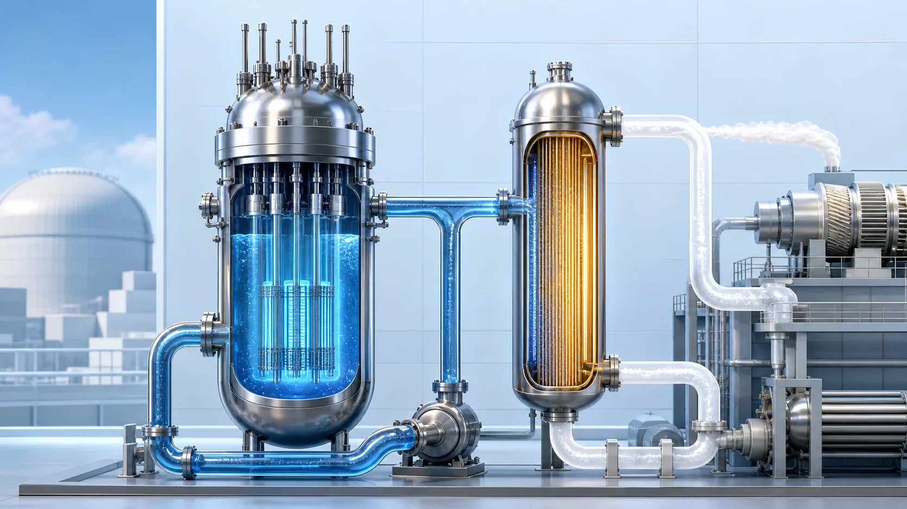
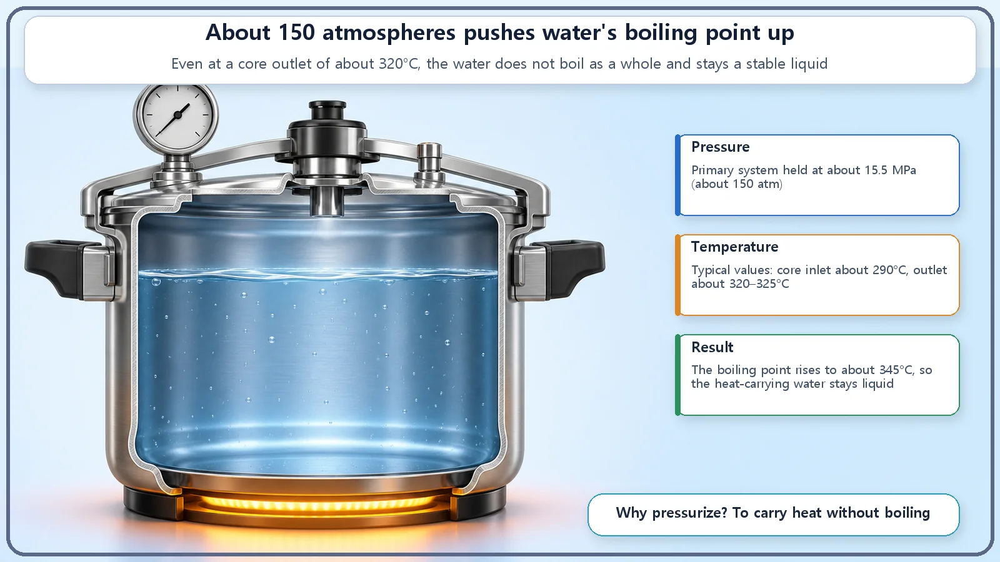
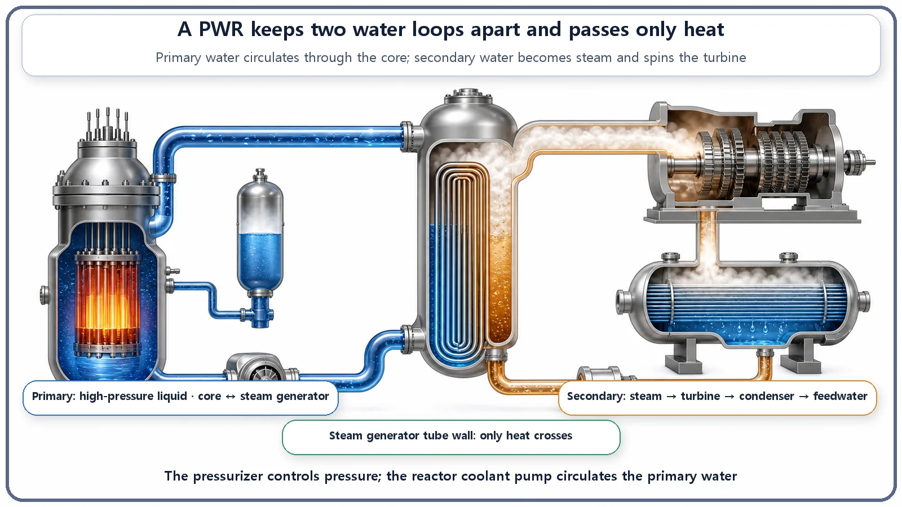

Reactor Types & Plant Systems · 176
A Pot of Water Held Down So It Can't Boil — How a Pressurized Water Reactor (PWR) Is Built
Like a pressure cooker, a PWR holds its core water under high pressure so it stays liquid, then hands the heat to a separate loop that makes the steam.

A pressurized water reactor keeps the ordinary water flowing through its core at about 150 atmospheres, so the water stays a hot liquid instead of boiling. That hot water passes its heat to a completely separate loop of water in the steam generator, and only that second loop boils into the steam that spins the turbine.
So far we have looked deep inside the reactor: neutrons splitting nuclei, heat finding its way out, fuel slowly changing over the years. Now it's time to step back and ask a bigger question: what does the whole power plant around that core actually look like? We'll start a tour of the different reactor types and their plant systems, and the first stop is the most widely used design in the world, the pressurized water reactor.
Unpacking the name: "pressurized" + "water" + "reactor"
The name sounds stiff, but it already contains most of the design. Let's take it apart.
- Water (light water): nothing exotic, just ordinary water, the H₂O we drink and wash with. Engineers call it "light water." (There is also "heavy water," whose hydrogen is replaced by a heavier cousin, but that belongs to a different reactor story.) This water does two jobs at once: it is the coolant that carries heat away from the core, and the moderator that slows neutrons down.
- Pressurized: exactly what it says, the water is kept under pressure. This is the feature the design is named for.
- Reactor: the nuclear reactor itself.
So a pressurized water reactor, or PWR, is "a reactor that uses ordinary water squeezed under high pressure." But why squeeze the water at all?
Think of a pressure cooker
Do you have a pressure cooker at home? Its trick is simple. Lock the lid, let the pressure inside build up, and the water can go past 100°C without boiling over. It stays a hotter liquid, which is why food cooks faster.
A PWR does exactly that. At 1 atmosphere (ordinary air pressure), water boils at 100°C and turns to steam. But if you hold the water flowing through the core at about 150 atmospheres (about 15.5 megapascals), its boiling point climbs to about 345°C. The water passing through the core is roughly 290°C at the inlet and around 320°C at the outlet. Because that is below the 345°C boiling point, the hot water stays liquid instead of boiling as a whole. (These temperatures and pressures are typical values; actual figures vary by plant, design and operating conditions.)
Why go to the trouble of keeping it from boiling? Liquid water carries heat away far more calmly and predictably than water full of bubbles. Cooling the fuel rods is a job that must not waver, so the single principle "keep the water a stable liquid" shapes the entire reactor design. It earns its place in the name.

The water runs on two separate paths
The second defining feature of a PWR is that the water travels on two separate loops. They are called the primary system and the secondary system, and they exchange heat without ever meeting. Let's follow how they connect.
Start with the primary system. This is the loop of hot, pressurized, non-boiling water we just described. The water picks up heat in the core, then flows to a large heat exchanger called the steam generator. There it hands over its heat, cools slightly, and is pushed back to the core by a pump. Core → steam generator → pump → core again: a closed loop that keeps circulating. Because this water passes directly through the core, it can carry radioactive material, so it circulates sealed inside thick, strong piping and vessels.
Two devices hang off this primary loop like side branches. One is the pressurizer, which keeps that roughly 150-atmosphere pressure steady and adjusts it. The names are easy to mix up, but the pressurizer is not the device that makes steam for the turbine. It is simply the pressure keeper. The other is the reactor coolant pump, which drives the primary water around the loop. The pump does not make heat; it makes the water move.
Now the secondary system. Inside the steam generator, the hot primary water flows inside thousands of thin metal tubes. Completely separate water, the secondary water, surrounds those tubes on the outside. Heat passes through the tube walls from the hot primary water to the secondary water, and this time it is the secondary water that boils into steam. That steam spins the turbine, which turns the generator and makes electricity. After the turbine, the steam is cooled back into water in the condenser, and the feedwater pump sends it back to the steam generator. This side is a loop as well.

Why split them? Think of a double boiler
A natural question follows: "Why not just boil the water in the core and send that steam straight to the turbine? Why bother with two loops?"
A double boiler is the perfect picture. When you melt chocolate, you set a bowl over a pan of simmering water and warm it indirectly. The hot water and the chocolate never mix, but the heat crosses easily. The steam generator is that double boiler. Primary and secondary water trade only heat across the tube walls and never mix.
The main reason for the split is to keep primary water, which has passed through the core and may contain radioactive material, from going out to the equipment on the outer side of the plant, such as the turbine and generator. Water that may be radioactive stays inside the tightly sealed primary system, and what drives the turbine is clean secondary steam. The single wall that separates the two loops also serves as a barrier that keeps radioactive material on the inside.
Its close cousin: how is a boiling water reactor different?
The PWR has a cousin with a similar name and personality: the boiling water reactor (BWR). As the name says, a BWR boils the water directly in the core and sends that steam straight to the turbine. Its systems are essentially one continuous path.
A PWR, by contrast, never lets the core water boil as a whole (hence "pressurized") and makes its steam in a separate secondary system (hence two loops). So the difference comes down to two things: where the water boils, and whether the systems are separated. Both use ordinary (light) water. Rather than one being better, think of them as two paths built on different design philosophies that reach the same goal: drawing heat out steadily to make electricity.
Today's summary
- A PWR uses ordinary (light) water as coolant and moderator, held at about 150 atmospheres so it stays a hot liquid that does not boil, because liquid water carries heat far more steadily than bubbly water.
- The water runs in a primary system (core → steam generator → pump → core, a high-pressure closed loop) and a secondary system (steam generator → turbine → condenser → feedwater).
- The two trade only heat in the steam generator, like a double boiler, and never mix, which also keeps radioactive material inside the primary system.
- The pressurizer keeps the pressure (it does not make steam); the reactor coolant pump moves the water (it does not make heat).
- A BWR boils water in the core and sends it straight to the turbine; the two designs differ in where the water boils and whether the systems are separated.